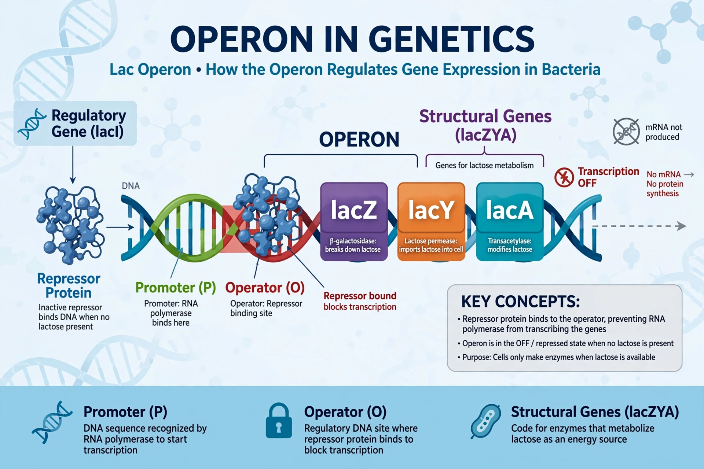

In genetics, an operon is a functioning unit of DNA containing a cluster of genes under the control of a single promoter. The genes are transcribed together into one polycistronic mRNA strand and are usually functionally related — for example, enzymes of one metabolic pathway. Operons are characteristic of prokaryotic genomes, allowing coordinated, economical regulation of gene expression: the entire set is switched on or off as a unit.
| Operon | |
|---|---|
 The lac operon | |
| Components | Promoter, operator, structural genes (sometimes a separate regulator gene) |
| Discovered | 1960–61, François Jacob and Jacques Monod |
| Famous examples | lac operon, trp operon |
The concept was proposed in 1961 by François Jacob and Jacques Monod at the Pasteur Institute, based on studies of lactose metabolism in E. coli. Their operon model, which introduced the ideas of messenger RNA, repressor proteins and operator sites, earned them a share of the 1965 Nobel Prize in Physiology or Medicine (with André Lwoff).
A canonical operon consists of a promoter, where RNA polymerase binds; an operator, where a repressor protein can block transcription; and the structural genes. In the lac operon, the LacI repressor blocks transcription until allolactose (an inducer) inactivates it, and a second, positive control (CAP–cAMP) ensures glucose is used preferentially — a logic that produces diauxic growth. The trp operon is instead repressible: tryptophan acts as co-repressor, and attenuation fine-tunes output.
Operons dominate bacterial and archaeal genomes; roughly half of E. coli protein-coding genes lie in operons. Genuine operons are rare in eukaryotes but occur in nematodes such as C. elegans (resolved by trans-splicing) and in some other lineages.